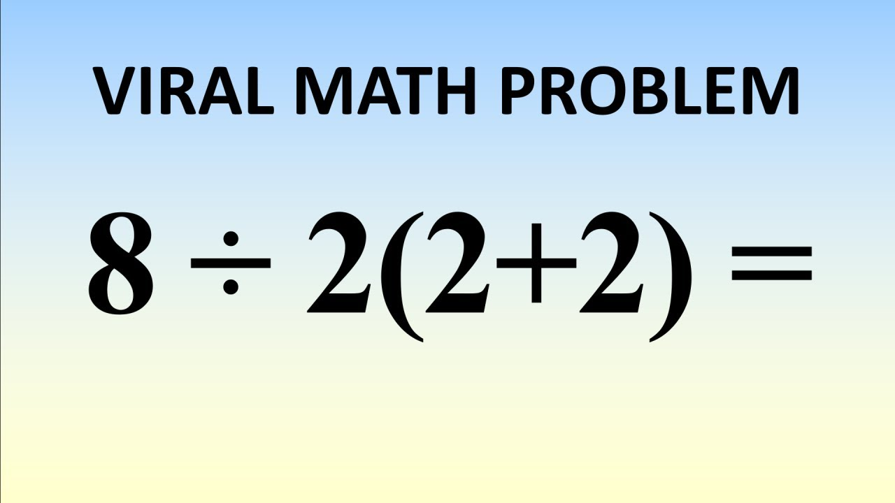

Let's say you are presented with an expression as follows: \[ \frac{13\cdot(14-9)}{7}\div\frac{15+[2-(-5)(-6)]}{\frac{14}{5}}+\frac{(3(-4)+5)+19}{2^{2}}\]
How do you go about solving this? You have 13 multiplied with (14-9), so do you evaluate the subtraction in the brackets first, or do you multiply with the minuend?
We also need to compute (-5)(-6), a negative multiplied with a negative. As well as a division between two fractions and then an addition.
It is crucial we introduce some rules for Arithmetic Operations which leave no ambiguity as to how to compute every sort of expressions.
Let's start off by listing some basic properties for each of the 4 basic operations.
...answers the question whether or not changing the position of parentheses in an expressions changes the outcome.
For addition and multiplication where you place the parentheses doesn't matter at all.
Mathematically: (1 + 2) + 3 = 1 + (2 + 3) = 6 and \((2\cdot 3)\cdot 4 = 2\cdot (3\cdot 4) = 24\). Note that parentheses are always computed first.
Operations whose position of parentheses does not matter are called associative.
Subtraction and division are not associative. The place of brackets in these expressions matters and changing them will also change the result.
\((3-2)-1 \neq 3-(2-1)\) and \((6 \div 3) \div 2 \neq 6 \div (3 \div 2)\). How to compute these expressions will be described shortly.
...tells you whether or not the order in which you write terms changes the outcome.
As with associativity, addition and multiplication is commutative,so 2+3 = 3+2 = 5 and \(2\cdot 3 = 3\cdot 2 = 6\).
Furthermore, as before, subtraction and division is not commutative, so \(2-3 \neq 3-2\) and \(4\div 2 \neq 2\div 4\).
Example: \(12 + 7 - 4 \cdot 7 + 14 \div 7\) = 19 - 28 + 2 = 21 - 28 = -7.
Every operation has an identity and inverse element. I'll explain the purpose of these elements with examples.
The identity element leaves the term unchanged, and for addition and subtraction this element is
called the additive identity and it is equal to 0.
Example: 1 + 0 = 1 and 1 - 0 = 1. The inverse element returns the identity element.
For addition and subtraction the inverse element, called the additive inverse is just the negative of the number.
Example 2: 1 + (-1) = 0. Here the inverse element is -1 and it returns the identity element 0.
For multiplication and division the identity element, called the multiplicative identity is 1,
because any number multiplied with or divided by 1 returns that number.
Example: \(5 \cdot 1 = 5\) and \(5 \div 1 = 5\). Therefore, multiplying and dividing with the inverse element, called the multiplicative inverse must return 1.
Example 2: \( 7 \cdot \frac{1}{7} = 1\) and \( 4 \div 4 = 1\). The inverse element of a number is the reciprocal of said number.
This property isn't necessarily essential for basic arithmetic, however it will become very important when you start learning algebra.
Distributivity describes how multiplication behaves when multiplied with a sum or difference.
Example: \(3\cdot (2+4)\). One could compute the sum inside of the parentheses and then multiply it out to get the result,
however one can also compute this expression using the distributive property. In our case we would multiply each addend individually and then compute the sum.
So: \(3\cdot (2+4) = 3\cdot 2 + 3\cdot 4 = 6 + 12 = 18\).
The order of operations to compute any expression is as follows: Parenthesis, exponents, multiplications and divisions, addition and subtraction.
These can easily be remembered using the mnemonic PEMDAS.
PEMDAS, which stands for Parentheses, Exponentiation, Multiplication and Division, Addition and Subtraction.
Note that multiplication and division as well as addition and subtraction have the same calculation priority respectively.
When you have either multiplication and division or addition and subtraction together you simply evaluate the expression from left to right.
Note that when you have a number next to a parenthesis without any symbol between them, it denotes multiplication.
Example: 3(4) = \(3 \cdot 4\) = 12.
Example 2: \( 15 - 3 \cdot 4 - (4\div 2) = 15 - 12 - (2) = 15 - 14 = 1\).
Example 3: \( 8 - 20 \div 5 + 2 \cdot 4 = 8 - 4 + 8 = 4 + 8 = 12\).
Multiplication with a negative term always switches the term of the outcome. So:
Example 4: \( (1)(-1) = -1, (-1)(1) = -1, (-1)(-1) = 1\). This last fact, that negative times negative equals positive, can be proven using the distributive property.
Proof: We start with the basic true proposition that 0 = 0, and 0 = 1-1. In the third step we multiply both sides of the equations by (-1), which is valid because it maintains the equality.
\[
0 = 0 \\
0 = 1 - 1 \\
(0)(-1) = (1 - 1)(-1) \\
0 = -1 + (-1)(-1) \\
1 = (-1)(-1) \:\:\: \blacksquare \\
\]
Example 5: 5(-4) + (-8)(-3) = -20 + (24) = 4.

A YouTube video by MindYourDecisions covering this "viral math problem".
This is a famous internet problem which has a lot of people divided on what the correct answer is.
Do you a) \(8\div 2(2+2) = 8\div 2(4) = 8\div 8 = 1\) or b) \(8\div 2(2+2) = 8\div 2 \cdot 4 = 4\cdot 4 = 16\)?
The answer of course is to never use the division symbol again. Divisions should always be noted as fractions,
because otherwise it will lead to confusions like this.
The original problem can be stated as either:
\(\frac{8}{2(2+2)} \text{ or } \frac{8}{2}(2+2)\). This gets rid of any arbitrariness the original problem had and also leads to the two answers we got previously.
From now on only use fractions to denote divisions.
Something is divisible by a number, when it divides evenly into that number and leaves no remainder. For example, six divides evenly into two because six divided by two equals three, so we say six is divisible by two. There is also a notation for showing divisibility of two numbers. For example, with our example now, six is divisibile by two would be written as follows: \(2 \mid 6\) (read: two divides six), meaning that six, when divided by two, leaves no remainder. Six is also divisible by three, so we would write \(3 \mid 6\) (three divides six). For every number there are certain rules and methods so that we can find through which number a number is divisible by.
0:
Division by 0 is not defined, so no number is divisible by zero.
1:
Every number is divisible by 1.
2:
A number is divisible by 2 if its last digit is divisible by 2. This is also the definition of an even number, that is, a number is even if it's divisible by 2.
A number not divisible by 2 is odd.
Example: \(196, 6\div 2 = 3 \to 2 \mid 196\)
3:
A number is divisible by 3 if the sum of its digits, also called the cross sum, is divisible by 3.
This naturally arises from how our number system works (which we will explore later, see Numeral Systems.
Example: \(711, 7 + 1 + 1 = 9, 9\div 3 = 3 \to 3 \mid 711\).
4:
A number is divisible by 4 if its last two digits are divisible by 4. This is because every multiple of 4 is only unique from 0 to 100, afterwards it repeats.
Example: \(948, 48 \div 4 = 12 \to 4 \mid 948\).
5:
A number is divisible by 5 if its last digit is 0 or 5.
Example: \(9718235, 5 \to 5 \mid 9718235\).
6:
A number is divisible by 6 if it's divisible by 2 and 3.
Example: \(714, 4\div 2 = 2, 12\div 3 = 4 \to 6 \mid 714\).
7:
A number is divisible by 7 if subtracting twice the last digit from the rest of the number gives a number divisible by 7.
Example: \(5152, 515 - 2(2) = 511, 51 - 2(1) = 49, 7 \mid 5152\) (49 is divisible by 7, as to why this works will be omitted).
8:
A number is divisible by 8 if its last 3 digits are divisible by 8. Same line of reasoning as with divisibility by 4.
Example: \(2168, 168\div 8 = 21 \to 8\mid 2168\).
9:
A number is divisible by 9 if its cross sum is divisible by 9.
Example: \(98766, 9 + 8 + 7 + 6 + 6 = 36, 36\div 9 = 4 \to 9\mid 98766\).
10:
A number is divisible by 10 if its last digit is 0.
Example: 20.
Obviously there are more divisibility rules for larger numbers, however they get more complicated as the size of the number grows and
knowing the divisibility rule for, say, 37 for example, if I might go out on a limb here,
is not particularly crucial when it comes to learning mathematics.
\( \begin{array}{l} 1.)\: 20 & 6.)\: 290 & 11.)\: 8 / 2 = 4\\ 2.)\: 14 & 7.)\: 40 & 12.)\: 1 + 7 + 5 + 2 + 3 = 18, 18/3 = 6\\ 3.)\: 37 & 8.)\: 20 & 13.)\: 9 + 9 + 5 + 2 + 2 = 27, 27/9 = 3\\ 4.)\: 20 & 9.)\: 19 & 14.)\: 2 + 8 + 7 + 4 + 2 + 5 + 2 = 30, 30 / 3 = 10\\ 5.)\: 29 & 10.)\: 1 & 15.)\: 1 / 2 = 0.5. \text{ Not divisible by 2 therefore not even}\\ \end{array} \)